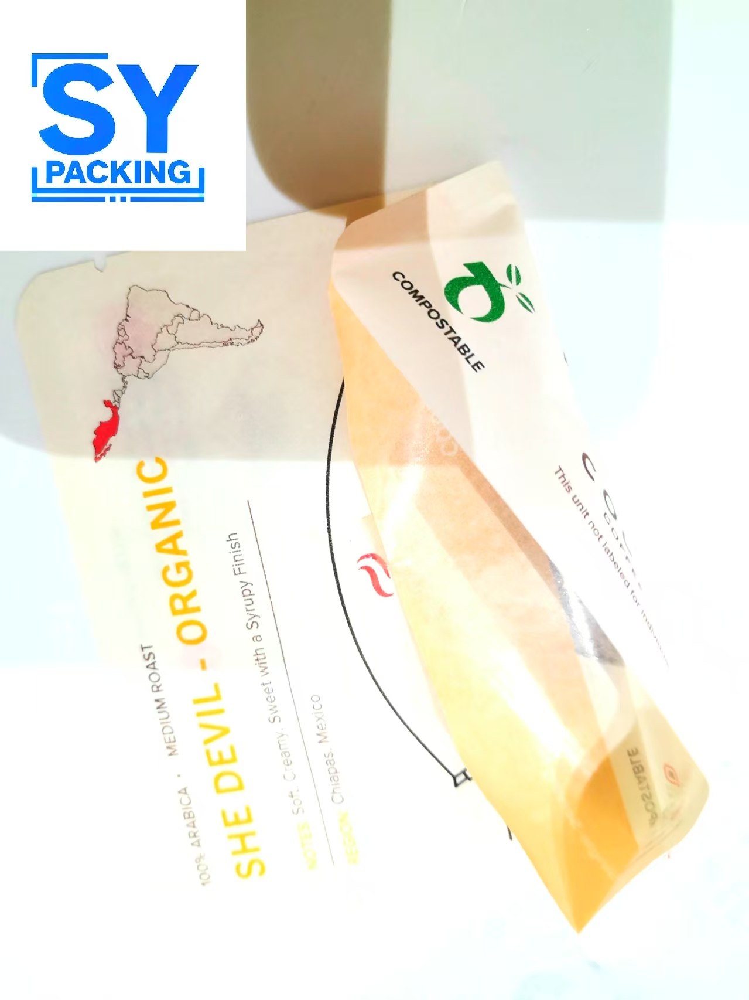

Cellophane vs. PLA: Two Transparent Packaging Materials with Completely Different Logics

Transparent flexible packaging is rarely just about appearance. Cellophane and PLA may look similar on the shelf, but their material origins, performance limits, and environmental pathways are fundamentally different. Understanding these differences is essential for choosing the right packaging solution for your product.
1. Material Origins: Natural Fiber vs. Plant Fermentation
Cellophane is made from natural cellulose derived from cotton linters or wood pulp. The cellulose is processed through the viscose method to produce a regenerated cellulose film. Its source is natural plant fiber.
PLA (Polylactic Acid) is made from fermented plant starches — typically corn, cassava, or sugarcane. The starch is converted into lactic acid through fermentation, which is then polymerized into PLA. It is a bio-based synthetic polymer.
One sentence distinction: Cellophane comes from refining natural fibers. PLA comes from fermenting plant sugars. One is extraction. The other is biosynthesis.
2. Performance Differences: Where Each Material Excels and Limits
🔴 Clarity & Gloss
- Cellophane: Exceptionally high clarity and gloss. Excellent printability with vibrant color reproduction.
- PLA: High transparency with gloss levels 2–3 times that of ordinary PP film and approximately 10 times that of LDPE.
🔴 Temperature Resistance
- Cellophane: Withstands temperatures up to 190°C without deformation. Suitable for high-temperature sterilization processes.
- PLA: Begins to soften at 60°C. Not suitable for hot-fill applications or microwave heating.
🔴 Flexibility & Toughness
- Cellophane: Has some stiffness but poor cross-directional tear strength — once nicked, it tears easily.
- PLA: Standard PLA is relatively brittle like glass, but can be modified with plasticizers to improve flexibility.
🔴 Barrier Properties
- Cellophane: Excellent oil and grease resistance. Also offers moderate gas permeability, which is beneficial for fresh produce (allows respiration).
- PLA: Natural oxygen and moisture barrier is relatively weak. Oxygen and water vapor permeate more easily, but barrier performance can be enhanced through coatings or modification.
🔴 Heat Sealability
- Cellophane: Standard cellophane is not heat-sealable — it requires adhesive sealing. However, moisture-proof cellophane (coated types) does offer heat sealability.
- PLA: Heat-sealable and compatible with high-speed automated packaging lines. Excellent for twist-wrapping confectionery.
🔴 Anti-Static Properties
- Cellophane: Naturally anti-static — does not attract dust easily.
- PLA: Requires anti-static additive treatment.
3. Environmental Pathways: Biodegradable vs. Compostable
🔴 Degradation Mechanism
- Cellophane: Biodegradable. Natural cellulose is broken down by microorganisms in soil. Pure cellulose film can decompose completely within approximately 4 months.
- PLA: Compostable under industrial conditions. Requires specific temperature (typically 58°C) and humidity levels to degrade. Does not break down in home composting or landfill environments.
🔴 Certification Requirements
- Cellophane: The base material is natural and biodegradable. However, coated cellophane (e.g., PVDC-coated or aluminum-laminated) is no longer compostable.
- PLA: Must pass industrial composting certifications such as EN 13432 or ASTM D6400 to be marketed as compostable.
🔴 Critical Reminder
- Not all cellophane is compostable. Coatings and laminations can eliminate its biodegradability. Always verify the specific structure.
- PLA requires industrial composting facilities. Without access to such infrastructure, it may not degrade as expected.
4. Material Selection Guide: Which One Fits Your Product?
Choose Cellophane if your product requires:
- High-temperature sterilization (heat resistance up to 190°C)
- Natural anti-static performance
- Superior gloss and printability for premium gift packaging
- Moderate gas permeability for fresh produce (breathable packaging)
Choose PLA if your product requires:
- High clarity and gloss for confectionery or premium baked goods
- Heat sealability for high-speed automated packaging lines
- Industrial compostability (where facilities exist)
- Ambient or refrigerated storage with short shelf-life requirements
5. Common Misconceptions
❌ "Cellophane is definitely eco-friendly."
✅ Pure cellophane is biodegradable, but coated or laminated cellophane may not be. Always check the full material structure.
❌ "PLA will degrade if I throw it away."
✅ PLA requires industrial composting conditions. In home compost or landfill, it may persist for a very long time.
❌ "Cellophane cannot be heat-sealed."
✅ Standard cellophane cannot, but moisture-proof coated cellophane does offer heat sealability.
❌ "PLA is not a real solution."
✅ PLA can be modified to enhance toughness, heat resistance, and barrier performance — research is actively addressing these limitations.
Conclusion
Cellophane and PLA may look similar, but their paths are different. Cellophane is a regenerated natural fiber. PLA is a bio-based synthetic polymer. Understanding their distinct origins, performance profiles, and environmental pathways is the key to making the right packaging choice for your product.
If you're unsure which transparent material fits your packaging requirements, our technical team can help you evaluate the options based on your product characteristics, shelf-life needs, and sustainability goals.
Need help choosing between Cellophane and PLA for your packaging?
Our technical team can evaluate your product requirements and recommend the right transparent material solution.
📧 Email: may.lee@shenyingpacking.com
💬 WhatsApp: +86 13424643780